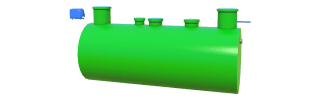
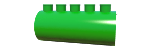
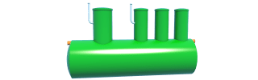
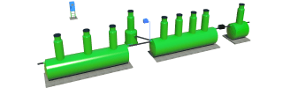

Каталог
Выберите модель из серии очистных сооружений
Септик БИОН
Автономная канализация
от 2 до 10 человекПерейти в каталог
Септик БИОН Pro H2
Автономная канализация
от 2 до 10 человекПерейти в каталог
Септик БИОН Pro H3
Автономная канализация
от 2 до 10 человекПерейти в каталог
КРИСТАЛЛ ЭКО
Локальные очистные станции для автомоек
Перейти в каталог
КРИСТАЛЛ ПРО
Локальные очистные станцииливневых стоков
Перейти в каталог
Септик БИОН Pro Max
Локальные очистные станции для автомоек
Перейти в каталог


Акции и руководства
Акция!
Обслуживание в подарок!
С 25 января 2022 купите «Септик БИОН» и получите в подарок дополнительное безвозмездное обслуживание на 3 года!
Оформить заказРуководства по септикам
-

Как выбрать установку?
Это видео с инструкцией и рекомендациями по подбору очистных сооружений для Вашего дома или сооружения.
-

Что не обходимо предусмотреть?
В видео обзоре Вы узнаете, что необходимо подготовить для специалистов по монтажным работам.
-

Глубина грунтовых вод
В видео обзоре рассматриваются главные темы про грунтовые воды и установки септиков.
Новости компании
 Сервис
Сервис
Проведено гарантийное обслуживание в поселке “Орский”
В очередной раз для наших клиентов проведена плановая гарантийная и постгарантийная очистка септиков. Четыре установки БИОН в поселке “Орский” порадуют новоселов.
 Сервис
Сервис
Проведена сервисная очистка септика в п. “Весений”
Накануне майских праздников для наших клиентов проведена плановая гарантийная очистка септиков. Четыре установки септик БИОН этой весной уменьшит заботы.
Налажена новая производственная линия
Наша компания запустила новую производственную линию. Теперь наши мощности позволяют вырабатывать продукцию в двойном объеме за те же сроки.
 Инновации
Инновации
Завершается установление ЛОС в Октябрьском районе
В Октябрьском районе завершена установка ливневой очичтсительной системы и ввод в эксплуатацию.

Преимущества септиков компании "Серво инжиниринг"
50
лет и более срок службы
98%
очитска сточных вод
1
раз в 1.5–2 года обслуживание